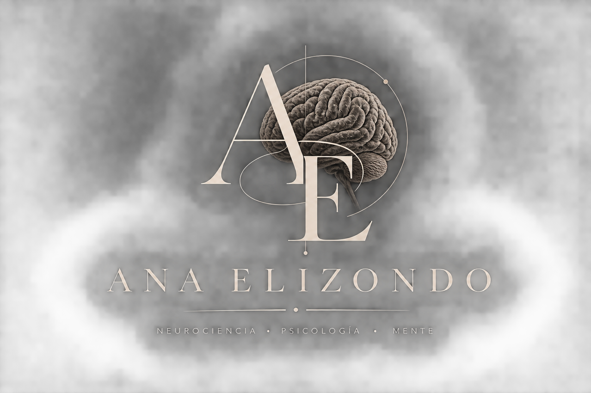

Información, recursos y herramientas basadas en evidencia para comprender mejor el cerebro, la conducta y la mente.
Explorar contenidoVer recursosMemoria, atención, emociones y aprendizaje.
Conducta, procesos mentales y bienestar.
Guías y materiales educativos.
Comprendé su verdadero papel.
Cómo aprende el cerebro.
Conducta, procesos mentales, sesgos y autoconocimiento.
Material digital educativo
PDF educativo
Colección digital
Hola, soy Ana Elizondo.
Soy autodidacta en psicología y neurociencia y, básicamente, me obsesioné con entender por qué hacemos las cosas que hacemos.
Así que abrí este espacio para tirarles todo lo que voy aprendiendo, pero sin convertirlo en una clase de tres horas: cerebro, conducta, psicología, neurociencia y cómo usar todo eso a tu favor en la vida real.
¿El pequeño detalle? No tengo un título todavía. Y sí, me da bastante paja que a veces parezca que si no tenés un papel firmado, automáticamente no podés saber nada. Tranquilos, tampoco me voy a autoproclamar neurocientífica mañana jaja.
Simplemente estudio, investigo, leo y comparto lo que voy descubriendo.
Si llegaste hasta acá, gracias por bancarte mi pequeña obsesión cerebral.
Y ya que estamos acá en esta página juntos, acá te dejo mis redes sociales para que sigamos.
Hay una cosa que quiero aclarar porque siento que en redes se habla muchísimo de dopamina, pero muchas veces se explica de una manera demasiado simplificada.
La típica frase es: “la dopamina es la hormona de la felicidad”.
Y no.
Primero, porque la dopamina ni siquiera es una hormona en el sentido en que normalmente usamos esa palabra. Es principalmente un neurotransmisor, una sustancia que utilizan determinadas neuronas para comunicarse y modular la actividad de distintos circuitos cerebrales.
Y segundo, porque reducirla a “placer” es quedarse con una parte muy pequeña de todo lo que realmente hace.
Yo prefiero entender la dopamina como parte de un sistema que participa en la motivación, el aprendizaje, la anticipación de recompensas y la selección de conductas.
Y esto cambia bastante la forma en la que entendemos nuestro comportamiento.
Porque la dopamina no aparece simplemente cuando algo me hace feliz.
Una de las cosas más interesantes que descubrimos gracias a la investigación de Wolfram Schultz y otros científicos es que determinadas neuronas dopaminérgicas pueden responder ante una recompensa inesperada y, después del aprendizaje, responder ante las señales que predicen esa recompensa.
Esto está relacionado con algo llamado error de predicción de recompensa.
Básicamente, mi cerebro está constantemente haciendo predicciones sobre lo que va a suceder.
Si ocurre algo mejor de lo que esperaba, existe una diferencia entre la predicción y el resultado.
Si ocurre exactamente lo que esperaba, esa diferencia cambia.
Y si ocurre algo peor de lo esperado, también existe información que puede modificar lo que voy a esperar la próxima vez.
Por eso la dopamina tiene muchísimo que ver con aprender de lo que sucede.
Y esto me parece mucho más interesante que decir simplemente “esto te da dopamina”.
Porque cuando alguien dice “Instagram te da dopamina”, “el celular te da dopamina” o “comer chocolate te da dopamina”, parece que nuestro cerebro fuera un vaso que se va llenando cada vez que hacemos algo agradable.
Y no funciona así.
La dopamina no es una especie de combustible de placer que se acumula dentro de nosotros.
Lo que existe son sistemas neuronales muchísimo más complejos, donde la dopamina participa en diferentes procesos dependiendo del circuito, el contexto y el comportamiento.
Y acá entra una diferencia que para mí es fundamental:
Placer y motivación no son exactamente lo mismo.
Puedo querer muchísimo conseguir algo y después descubrir que, cuando finalmente lo tengo, ni siquiera lo disfruto tanto.
Esto es importante porque muchas conductas humanas no se mantienen únicamente porque nos hagan sentir bien.
También pueden mantenerse porque nuestro cerebro aprendió que determinada conducta puede llevarnos a algo relevante.
Por ejemplo, agarrar el celular.
No necesariamente lo agarramos porque cada vez que lo hacemos sentimos una felicidad enorme.
Muchas veces lo hacemos porque aprendimos que desbloquearlo puede llevarnos a encontrar algo nuevo.
Un mensaje.
Una notificación.
Un video interesante.
Una interacción.
Algo inesperado.
Y esa posibilidad de encontrar algo puede mantener la conducta de búsqueda.
Esto es especialmente interesante cuando hablamos de redes sociales porque muchas plataformas están diseñadas alrededor de novedad, recompensa, anticipación y retroalimentación inmediata.
Pero tampoco quiero caer en la típica explicación exagerada de que “TikTok destruye tu dopamina” o que las redes secuestran tu cerebro como si literalmente nos estuvieran vaciando una sustancia química.
Eso no es una explicación científica suficientemente buena.
Lo interesante es entender que nuestro cerebro tiene sistemas de aprendizaje y motivación que pueden ser influenciados por el entorno.
Y cuanto más entendemos esos mecanismos, más fácil resulta entender por qué algunas conductas se vuelven tan automáticas.
Por eso para mí estudiar dopamina no sirve solamente para aprender neurociencia y poder decir palabras complicadas.
Sirve para entendernos a nosotros mismos.
Sirve para comprender por qué a veces sabemos perfectamente que deberíamos estudiar, entrenar o terminar algo importante, pero aun así sentimos una enorme atracción por una recompensa inmediata.
También sirve para entender por qué la anticipación puede ser tan poderosa.
Por qué a veces estamos más obsesionados con esperar un mensaje que con el mensaje en sí.
Por qué una notificación puede interrumpir lo que estamos haciendo.
Por qué podemos entrar a una aplicación durante cinco minutos y terminar quedándonos muchísimo más tiempo.
Y también sirve para dejar de culparnos por absolutamente todo.
Porque decir “soy una persona sin disciplina” es una explicación demasiado pobre para una conducta humana compleja.
Nuestra conducta está influida por aprendizaje, hábitos, contexto, recompensas, expectativas, emociones y sistemas cerebrales.
Eso no significa que no tengamos capacidad de decisión.
Significa que entender los mecanismos que influyen sobre nosotros puede ayudarnos a tomar mejores decisiones.
Y acá es donde yo creo que la psicología y la neurociencia se vuelven realmente útiles.
Porque conocer cómo funciona el cerebro no debería servir solamente para memorizar nombres de estructuras.
Debería servir para observar nuestra propia conducta con un poco más de inteligencia.
Si entiendo que mi cerebro aprende asociaciones entre señales, conductas y resultados, puedo empezar a modificar mi entorno.
Puedo hacer que determinadas conductas sean más fáciles de repetir y otras más difíciles.
Puedo dejar de depender constantemente de recompensas inmediatas.
Puedo entender por qué la gratificación instantánea puede competir con objetivos que tienen una recompensa mucho más lejana.
Y puedo empezar a construir hábitos pensando no solamente en “tener fuerza de voluntad”, sino también en cómo está diseñado mi entorno.
Por eso me interesa tanto hablar de dopamina.
No porque sea una palabra de moda.
Sino porque detrás de esa palabra hay una explicación bastante profunda de cómo aprendemos, qué perseguimos y por qué repetimos determinadas conductas.
Y después de entender todo esto, hay algo que personalmente me parece bastante más interesante que decir que la dopamina es la sustancia de la felicidad:
No se trata solamente de qué cosas me hacen sentir bien; también se trata de qué cosas mi cerebro está aprendiendo a perseguir.
Y entender esa diferencia puede cambiar bastante la manera en la que veo mis propios hábitos.
Serás enviado a Mercado Pago para completar el pago de forma segura.
Lucas Emanuel Luna Atienzalucasmp2018El archivo se habilita únicamente después de que Mercado Pago confirme el pago.
Yo antes pensaba que tener buena memoria era simplemente acordarte de muchas cosas. Pero cuando empecé a estudiar cómo funciona el cerebro, entendí que es bastante más delirante que eso. La memoria no es una cámara que graba todo lo que vivimos. El cerebro selecciona, organiza, relaciona y reconstruye información. Por eso podemos olvidar algo que nos pasó ayer y, en cambio, acordarnos perfectamente de una boludez de hace cinco años. Y algo clave para recordar mejor, no alcanza con leer algo veinte veces. El cerebro aprende mucho mejor cuando tiene que recuperar activamente la información, relacionarla con conocimientos previos y volver a encontrarla después. Por eso estudiar cómo funciona la memoria no es solamente interesante: te puede servir literalmente para estudiar mejor, aprender más rápido y dejar de depender de repetir las cosas hasta el cansancio. Y si querés llevar esto al siguiente nivel, abajo te dejo mi guía paga, donde te enseño cómo funcionan los palacios mentales, técnicas de asociación y cómo entrenar tu memoria para empezar a usarla realmente a tu voluntad.
Hay algo de la psicología que a mí particularmente me obsesiona: la parte de nosotros que no mostramos.
Porque todos tenemos una versión que enseñamos y otra que solamente aparece cuando nadie está mirando.
Y no, no hablo de “personalidades secretas” ni de esas frases de internet que parecen profundas. Hablo de algo mucho más interesante: mecanismos, patrones, impulsos, inseguridades, sesgos y formas de interpretar la realidad que muchas veces ni siquiera reconocemos en nosotros mismos.
Durante mucho tiempo me interesó observar a las personas. Cómo hablan, cómo cambian su comportamiento dependiendo de quién tienen enfrente, qué cosas repiten, qué intentan ocultar, qué les molesta, qué buscan demostrar y, sobre todo, qué hacen cuando creen que nadie está prestando atención.
Y probablemente muchas de las personas que me ven no tienen idea de cuánto las observo.
No porque esté intentando juzgarlas, sino porque para mí la conducta humana siempre fue algo fascinante.
Una conversación, una reacción, una forma de evitar un tema, una contradicción, una necesidad de aprobación o incluso una manera de relacionarse pueden decir muchísimo más de una persona de lo que parece.
Pero hay algo todavía más interesante: observar no alcanza.
Porque puedo mirar una conducta y equivocarme completamente sobre su significado.
Y ahí fue cuando empecé a interesarme cada vez más por estudiar psicología.
Porque la psicología me dio algo que simplemente observar personas no podía darme: conceptos para organizar lo que estaba viendo, teorías para cuestionar mis propias interpretaciones y evidencia para diferenciar una intuición de una explicación realmente fundamentada.
Y cuanto más estudio, más me doy cuenta de que la mente humana puede ser bastante contradictoria.
Podemos querer algo y sabotearnos cuando lo conseguimos.
Podemos defender una idea no porque sea cierta, sino porque forma parte de nuestra identidad.
Podemos recordar una situación con absoluta seguridad y aun así estar equivocados en algunos detalles.
Podemos justificar decisiones después de haberlas tomado y convencernos de que fueron completamente racionales.
Podemos interpretar las acciones de otra persona de acuerdo con nuestros propios miedos y después creer que estamos viendo la realidad objetivamente.
Y esta es, para mí, una de las partes más oscuras de la psicología: no siempre tenemos acceso transparente a las razones de nuestra propia conducta.
A veces creemos conocernos muchísimo y, sin embargo, solamente conocemos la historia que nos contamos sobre nosotros mismos.
Por eso aprender psicología no debería servir para convertirte en alguien que diagnostica a todo el mundo.
Debería servir para algo bastante más incómodo:
aprender a sospechar también de tu propia mente.
Porque es muy fácil estudiar psicología para encontrar explicaciones sobre los demás.
“Hace esto porque tiene inseguridad.”
“Se comporta así porque tiene tal apego.”
“Me trata así porque tiene miedo.”
Pero es muchísimo más difícil utilizar esos conocimientos para observar nuestros propios patrones.
Ahí es donde realmente empieza el autoconocimiento.
Y justamente por eso quise hacer esta guía.
Porque todo esto que fui aprendiendo no quería dejarlo solamente en apuntes, libros o cosas que leo por curiosidad. Quería transformarlo en algo que pudiera compartir de una manera que se entienda, pero sin sacrificar la parte interesante de la psicología.
En esta parte gratuita te dejo una introducción para que entiendas la lógica.
Pero abajo dejé la guía completa, donde me meto muchísimo más en la psicología de la conducta, sesgos cognitivos, mecanismos de defensa, manipulación, influencia social, autoestima, apego, percepción, personalidad, emociones y otros conceptos que te permiten mirar determinadas situaciones desde una perspectiva completamente diferente.
No la hice para darte un listado de “trucos psicológicos” para controlar personas.
La hice para que empieces a entender algo mucho más interesante:
cómo funciona la mente que tenés enfrente y cómo funciona la que llevás adentro.
Y probablemente esa segunda sea bastante más difícil de entender.